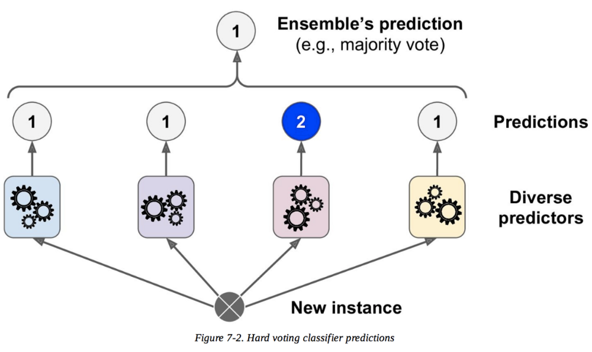

<!DOCTYPE html>
<html lang="en">

</html>
<html>

<head>
    <meta charset="UTF-8">
    <meta http-equiv="X-UA-Compatible" content="IE=edge">
    <title>Artificial Intelligence Interview Questions -Interview of Geeks</title>

    <!-- Css -->
    <link rel="favicon icon" href="favicon.png">
    <link rel="stylesheet" href="../style/style.css">
    <link href="https://cdn.jsdelivr.net/npm/bootstrap@5.0.0-beta2/dist/css/bootstrap.min.css" rel="stylesheet"
        integrity="sha384-BmbxuPwQa2lc/FVzBcNJ7UAyJxM6wuqIj61tLrc4wSX0szH/Ev+nYRRuWlolflfl" crossorigin="anonymous">

    <!-- Scripts -->
    <script src="https://code.jquery.com/jquery-3.2.1.slim.min.js"></script>
    <script src="https://cdn.jsdelivr.net/npm/bootstrap@5.0.0-beta2/dist/js/bootstrap.bundle.min.js"
        integrity="sha384-b5kHyXgcpbZJO/tY9Ul7kGkf1S0CWuKcCD38l8YkeH8z8QjE0GmW1gYU5S9FOnJ0"
        crossorigin="anonymous"></script>

    <!-- Meta Tags -->
    <meta name="keywords"
        content="interviewofgeeks, interview of geeks, interview preperation, interview questions, interview, artificial Intelligence interview questions, ai interview questions, ai, Strong Artificial Intelligence, Weak Artificial Intelligence,  Artificial Intelligence, applications of AI, Tower of Hanoi, Turing test, expert system, breadth-first search, BSF, Depth-first search, DFS, bidirectional search algorithm, fuzzy logic, inductive, deductive, abductive, ensemble learning, neural networks, TensorFlow">
    <meta name="author" content="Ajay Kumar">
    <meta name="description"
        content="In this Artificial Intelligence Interview Questions, we have compiled a list of some of the most frequently asked questions by interviewers during AI-based job interviews">
    <meta name="viewport" content="width=device-width, initial-scale=1.0">

    <!-- Global site tag (gtag.js) - Google Analytics -->
    <script data-ad-client="ca-pub-4645356742269640" async
        src="https://pagead2.googlesyndication.com/pagead/js/adsbygoogle.js"></script>
    <script async src="https://www.googletagmanager.com/gtag/js?id=G-ZX3ZK4E5HC"></script>
    <script>
        window.dataLayer = window.dataLayer || [];
        function gtag() { dataLayer.push(arguments); }
        gtag('js', new Date());

        gtag('config', 'G-ZX3ZK4E5HC');
    </script>

    <style>
        body {
            font-family: 'Open Sans', sans-serif;
            background-color: rgb(250, 250, 250);
            overflow-x: hidden;
        }
    </style>


</head>
<!-- Header -->

<body>

    <div class="">
        <nav class="navbar bg-white" id="siteloog">
            <a href="../index.html"><span class="navbar-brand mb-0 h1"></span></a>
        </nav>
        <!-- Header Menu -->
        <nav class="navbar navbar-expand-lg navbar-light bg-white">
            <button class="navbar-toggler" type="button" data-toggle="collapse" data-target="#navbarNav"
                aria-controls="navbarNav" aria-expanded="false" aria-label="Toggle navigation">
                <span class="navbar-toggler-icon"></span>
            </button>
            <div class="collapse navbar-collapse" id="navbarNav">
                <ul class="navbar-nav">
                    <li class="nav-item ">
                        <a class="nav-link" href="../index.html">Home</a>
                    </li>
                    <li class="nav-item">
                        <a class="nav-link active" href="ai.html">AI</a>
                    </li>
                    <li class="nav-item">
                        <a class="nav-link" href="data-structure.html">Data Structure</a>
                    </li>
                    <li class="nav-item">
                        <a class="nav-link" href="algorithm.html">Algorithm</a>
                    </li>
                    <li class="nav-item">
                        <a class="nav-link" href="company-interview.html">Company Interview</a>
                    </li>
                    <li class="nav-item">
                        <a class="nav-link" href="technical-interview.html">Technical Interview</a>
                    </li>
                    <li class="nav-item">
                        <a class="nav-link" href="web-interview.html">Web Interview</a>
                    </li>
                    <li class="nav-item">
                        <a class="nav-link" href="java-interview.html">Java Interview</a>
                    </li>
                    <li class="nav-item">
                        <a class="nav-link" href="database-interview.html">Data Base Interview</a>
                    </li>
                    <li class="nav-item">
                        <a class="nav-link" href="python-interview.html">Python Interview</a>
                    </li>
                </ul>
            </div>
        </nav>

        <!-- Main div -->
        <div class="container  ">
            <div class="row" style="margin-top: 25px;">
                <div class="col-md-8 bg-white shadow-sm">
                    <span>
                        <h4 class="hm-welcome">Artificial Intelligence Interview Questions</h4>
                    </span><span>68 Questions</span>

                    <hr class="divider">
                    <p class="read-para">Artificial Intelligence (AI) has made a huge impact across several industries,
                        such as healthcare, finance, telecommunication, business, education, etc., within a short
                        period. Today, almost every company is looking for AI professionals to implement Artificial
                        Intelligence in their systems and provide better customer experience, along with other features.
                        In this Artificial Intelligence Interview Questions, we have compiled a list of some of the
                        most frequently asked questions by interviewers during AI-based job interviews</p>
                    <br>


                    <div>
                        <ol class="qa-list">
                            <li>
                                <h5 class="question">1. What is the difference between Strong Artificial Intelligence
                                    and Weak Artificial Intelligence?</h5>
                                <table class="table read-para">
                                    <thead class="thead-dark ">
                                        <tr>
                                            <th scope="col" style="width: 50%;">Weak AI</th>
                                            <th scope="col" style="width: 50%;">Strong AI</th>
                                        </tr>
                                    </thead>
                                    <tbody>
                                        <tr>
                                            <td>Narrow application, with very limited scope</td>
                                            <td>Widely applied, with vast scope</td>
                                        </tr>
                                        <tr>
                                            <td>Good at specific tasks</td>
                                            <td>Incredible human-level intelligence</td>
                                        </tr>
                                        <tr>
                                            <td>Uses supervised and unsupervised learning to process data</td>
                                            <td>Uses clustering and association to process data</td>
                                        </tr>
                                        <tr>
                                            <td>E.g., Siri, Alexa, etc.</td>
                                            <td>E.g., Advanced Robotics</td>
                                        </tr>
                                    </tbody>
                                </table>

                                <hr>
                            </li>

                            <li>
                                <h5 class="question">2. What is Artificial Intelligence?</h5>
                                <p class="read-para">Artificial Intelligence is a field of computer science wherein the
                                    cognitive functions of the human brain are studied and tried to be replicated on a
                                    machine/system. Artificial Intelligence is today widely used for various
                                    applications like computer vision, speech recognition, decision-making, perception,
                                    reasoning, cognitive capabilities, and so on.</p>
                                <hr>
                            </li>

                            <li>
                                <h5 class="question">3. List some applications of AI.</p>

                                    <ol>
                                        <li class="read-para">Natural language processing</li>

                                        <li class="read-para">Chatbots</li>

                                        <li class="read-para">Sentiment analysis</li>

                                        <li class="read-para">Sales prediction</li>
                                        <li class="read-para">Self-driving cars</li>
                                        <li class="read-para">Facial expression recognition</li>
                                        <li class="read-para">Image tagging</li>


                                    </ol>
                                    <hr>
                            </li>

                            <li>
                                <h5 class="question">4. List the programming languages used in AI.</h5>
                                <ul class="read-para">
                                    <li>Python</li>
                                    <li>R</li>
                                    <li>Lisp</li>
                                    <li>Prolog</li>
                                    <li>Java</li>
                                </ul>
                                <hr>
                            </li>

                            <li>
                                <h5 class="question">5. What is Tower of Hanoi?</h5>
                                <p class="read-para">Tower of Hanoi is a mathematical puzzle that shows how recursion
                                    might be utilized as
                                    a device in building up an algorithm to take care of a specific problem. Using a
                                    decision tree and a breadth-first search (BFS) algorithm in AI, we can solve the
                                    Tower of Hanoi.</p>
                                
                                <hr>
                            </li>

                            <li>
                                <h5 class="question">6. What is Turing test?</h5>
                                <p class="read-para">The Turing test is a method to test a machine’s ability to match
                                    the human-level intelligence. A machine is used to challenge human intelligence, and
                                    when it passes the test it is considered intelligent. Yet a machine could be viewed
                                    as intelligent without sufficiently knowing how to mimic a human.</p>
                                
                                <hr>
                            </li>


                            <li>
                                <h5 class="question">7. What is an expert system? What are the characteristics of an
                                    expert system?</h5>
                                <p class="read-para">An expert system is an Artificial Intelligence program that has
                                    expert-level knowledge about a specific area and how to utilize its information to
                                    react appropriately. These systems have the expertise to substitute a human expert.
                                    Their characteristics include:</p>
                                <ul class="read-para">
                                    <li>High performance</li>
                                    <li>Adequate response time</li>
                                    <li>Reliability</li>
                                    <li>Understandability</li>
                                </ul>
                                <hr>
                            </li>

                            <li>
                                <h5 class="question">8. List the advantages of an expert system.</h5>

                                <ul class="read-para">
                                    <li>Consistency</li>
                                    <li>Memory</li>
                                    <li>Diligence</li>
                                    <li>Logic</li>
                                    <li>Multiple expertise</li>
                                    <li>Ability to resion</li>
                                    <li>Fast response</li>
                                </ul>
                                <hr>
                            </li>

                            <li>
                                <h5 class="question">9. What is an A* algorithm search method?</h5>
                                <p class="read-para">A* is a computer algorithm that is extensively used for the purpose
                                    of finding the path or traversing a graph in order to find the most optimal route
                                    between various points called the nodes.</p>
                                <hr>
                            </li>

                            <li>
                                <h5 class="question">10. What is a breadth-first search algorithm?</h5>
                                <p class="read-para">A breadth-first search (BFS) algorithm, used for searching tree or
                                    graph data structures, starts from the root node, then proceeds through neighboring
                                    nodes, and further moves toward the next level of nodes.</p>
                                
                                <p class="read-para">Till the arrangement is found, it produces one tree at any given
                                    moment. As this
                                    pursuit can be executed utilizing the FIFO (first-in, first-out) data structure,
                                    this strategy gives the shortest path to the solution.</p>
                                <hr>
                            </li>

                            <li>
                                <h5 class="question">11. What is a depth-first search algorithm?</h5>
                                <p class="read-para">Depth-first search (DFS) is based on LIFO (last-in, first-out). A
                                    recursion is implemented with LIFO stack data structure. Thus, the nodes are in a
                                    different order than in BFS. The path is stored in each iteration from root to leaf
                                    nodes in a linear fashion with space requirement.</p>
                                
                                <hr>
                            </li>

                            <li>
                                <h5 class="question">12. What is a bidirectional search algorithm?</h5>
                                <p class="read-para">In a bidirectional search algorithm, the search begins in forward
                                    from the beginning state and in reverse from the objective state. The searches meet
                                    to identify a common state. The initial state is linked with the objective state in
                                    a reverse way. Each search is done just up to half of the aggregate way.</p>

                                <hr>
                            </li>

                            <li>
                                <h5 class="question">13. What is an iterative deepening depth-first search algorithm?
                                </h5>
                                <p class="read-para">The repetitive search processes of level 1 and level 2 happen in
                                    this search. The
                                    search processes continue until the solution is found. Nodes are generated until a
                                    single goal node is created. Stack of nodes is saved.</p>
                                <hr>
                            </li>

                            <li>
                                <h5 class="question">14. What is a uniform cost search algorithm?</h5>
                                <p class="read-para">The uniform cost search performs sorting in increasing the cost of
                                    the path to a node. It expands the least cost node. It is identical to BFS if each
                                    iteration has the same cost. It investigates ways in the expanding order of cost.
                                </p>
                                <hr>
                            </li>

                            <li>
                                <h5 class="question">15. How are game theory and AI related?</h5>
                                <p class="read-para">AI system uses game theory for enhancement; it requires more than
                                    one participant
                                    which narrows the field quite a bit. The two fundamental roles are as follows:</p>
                                <ul class="read-para">
                                    <li>Participant design: Game theory is used to enhance the decision of a participant
                                        to get maximum utility.</li>
                                    <li>Mechanism design: Inverse game theory designs a game for a group of intelligent
                                        participants, e.g., auctions.</li>
                                </ul>
                                <hr>
                            </li>
                            <div style="width: 100%; height: 40px; background-color: green;" id="javastaticquestions">
                                <h5 style="color: white; margin: auto; padding: auto; text-align: center;">
                                    Artificial Intelligence - Intermediate Interview Questions
                                </h5>
                            </div><br>

                            <li>
                                <h5 class="question">16. Explain Alpha–Beta pruning.</h5>
                                <p class="read-para">Alpha–Beta pruning is a search algorithm that tries to reduce the
                                    number of nodes that are searched by the minimax algorithm in the search tree. It
                                    can be applied to ‘n’ depths and can prune the entire subtrees and leaves.</p>
                                <hr>
                            </li>

                            <li>
                                <h5 class="question">17. What is a fuzzy logic?</h5>
                                <p class="read-para">Fuzzy logic is a subset of AI; it is a way of encoding human
                                    learning for artificial processing. It is a form of many-valued logic. It is
                                    represented as IF-THEN rules.</p>
                                <hr>
                            </li>

                            <li>
                                <h5 class="question">18. List the applications of fuzzy logic.</h5>
                                <ul class="read-para">
                                    <li>Facial pattern recognition</li>
                                    <li>Air conditioners, washing machines, and vacuum cleaners
                                    </li>
                                    <li>Antiskid braking systems and transmission systems
                                    </li>
                                    <li>Control of subway systems and unmanned helicopters
                                    </li>
                                    <li>Weather forecasting systems
                                    </li>
                                    <li>Project risk assessment
                                    </li>
                                    <li>Medical diagnosis and treatment plans
                                    </li>
                                    <li>Stock trading
                                    </li>
                                </ul>
                                <hr>
                            </li>

                            <li>
                                <h5 class="question">19. What is a partial-order planning?</h5>
                                <p class="read-para">A problem has to be solved in a sequential approach to attain the
                                    goal. The partial-order plan specifies all actions that need to be undertaken but
                                    specifies an order of the actions only when required.</p>
                                <hr>
                            </li>

                            <li>
                                <h5 class="question">20. What is FOPL?</h5>
                                <p class="read-para">First-order predicate logic is a collection of formal systems,
                                    where each statement is divided into a subject and a predicate. The predicate refers
                                    to only one subject, and it can either modify or define the properties of the
                                    subject.</p>
                                <hr>
                            </li>

                            <li>
                                <h5 class="question">21. What is the difference between inductive, deductive, and
                                    abductive Machine Learning?</h5>
                                <table class="table">
                                    <thead class="thead-dark read-para">
                                        <tr>
                                            <th scope="col" style="width: 33%;">Inductive Machine Learning</th>
                                            <th scope="col" style="width: 33%;">Deductive Machine Learning</th>
                                            <th scope="col" style="width: 34%;">Abductive Machine Learning</th>
                                        </tr>
                                    </thead>
                                    <tbody class="read-para">
                                        <tr>
                                            <td>Learns from a set of instances to draw the conclusion</td>
                                            <td>Derives the conclusion and then improves it based on the previous
                                                decisions
                                            </td>
                                            <td>It is a Deep Learning technique where conclusions are derived based on
                                                various instances</td>
                                        </tr>
                                        <tr>
                                            <td>Statistical Machine Learning such as KNN (K-nearest neighbor) or SVM
                                                (Support Vector Machine)</td>
                                            <td>Machine Learning algorithm using a decision tree
                                            </td>
                                            <td>Deep neural networks</td>
                                        </tr>

                                        <tr>
                                            <td>A ⋀ B ⊢ A → B (Induction)</td>
                                            <td>A ⋀ (A → B) ⊢ B (Deduction)
                                            </td>
                                            <td>B ⋀ (A → B) ⊢ A (Abduction)</td>
                                        </tr>
                                    </tbody>
                                </table>
                                <hr>
                            </li>

                            <li>
                                <h5 class="question">22. List the different algorithm techniques in Machine Learning.
                                </h5>
                                <ul class="read-para">
                                    <li>Supervised Learning</li>
                                    <li>Unsupervised Learning</li>
                                    <li>Semi-supervised Learning</li>
                                    <li>Reinforcement Learning</li>
                                    <li>Transduction</li>
                                    <li>Learning to Learn</li>
                                </ul>
                                <hr>
                            </li>

                            <li>
                                <h5 class="question">23. What is Deep Learning?</h5>
                                <p class="read-para">Deep Learning is a subset of Machine Learning which is used to
                                    create an artificial multi-layer neural network. It has self-learning capabilities
                                    based on previous instances, and it provides high accuracy.</p>
                                <hr>
                            </li>
                            <li>
                                <h5 class="question">24. Differentiate between supervised, unsupervised, and
                                    reinforcement learning.</h5>
                                <table class="table">
                                    <thead class="thead-dark read-para">
                                        <tr>
                                            <th scope="col" style="width: 16%;">Differentiation Based on</th>
                                            <th scope="col" style="width: 28%;">Supervised Learning</th>
                                            <th scope="col" style="width: 28%;">Unsupervised Learning</th>
                                            <th scope="col" style="width: 28%;">Reinforcement Learning</th>
                                        </tr>
                                    </thead>
                                    <tbody class="read-para">
                                        <tr>
                                            <td>Features</td>
                                            <td>The training set has both predictors and predictions.</td>
                                            <td>The training set has only predictors.</td>
                                            <td>It can establish state-of-the-art results on any task.</td>
                                        </tr>
                                        <tr>
                                            <td>Algorithms</td>
                                            <td>Linear and logistic regression, support vector machine, and Naive Bayes
                                            </td>
                                            <td>K-means clustering algorithm and dimensionality reduction algorithms
                                            </td>
                                            <td>Q-learning, state-action-reward-state-action (SARSA), and Deep Q Network
                                                (DQN)</td>
                                        </tr>

                                        <tr>
                                            <td>Uses</td>
                                            <td>Image recognition, speech recognition, forecasting, etc.</td>
                                            <td>Preprocessing data, pre-training supervised learning algorithms, etc.
                                            </td>
                                            <td>Warehouses, inventory management, delivery management, power system,
                                                financial systems, etc.</td>
                                        </tr>
                                    </tbody>
                                </table>
                                <hr>
                            </li>

                            <li>
                                <h5 class="question">25. Differentiate between parametric and non-parametric models.
                                </h5>
                                <table class="table">
                                    <thead class="thead-dark read-para">
                                        <tr>
                                            <th scope="col" style="width: 33%;">Differentiation Based on</th>
                                            <th scope="col" style="width: 33%;">Parametric Model</th>
                                            <th scope="col" style="width: 34%;">Non-parametric Model</th>
                                        </tr>
                                    </thead>
                                    <tbody class="read-para">
                                        <tr>
                                            <td>Features</td>
                                            <td>A finite number of parameters to predict new data</td>
                                            <td>Unbounded number of parameters</td>
                                        </tr>
                                        <tr>
                                            <td>Algorithm</td>
                                            <td>Logistic regression, linear discriminant analysis, perceptron, and Naive
                                                Bayes</td>
                                            <td>K-nearest neighbors, decision trees like CART and C4.5, and support
                                                vector machines</td>
                                        </tr>

                                        <tr>
                                            <td>Benefits</td>
                                            <td>Simple, fast, and less data</td>
                                            <td>Flexibility, power, and performance</td>
                                        </tr>
                                        <tr>
                                            <td>Limitations</td>
                                            <td>Constrained, limited complexity, and poor fit</td>
                                            <td>More data, slower, and overfitting</td>
                                        </tr>
                                    </tbody>
                                </table>
                                <hr>
                            </li>

                            <li>
                                <h5 class="question">26. Name a few Machine Learning algorithms you know.</h5>
                                <ul class="read-para">
                                    <li>Logistic regression</li>
                                    <li>Linear regression</li>
                                    <li>Decision trees</li>
                                    <li>Support vector machines</li>
                                    <li>Naive Bayes, and so on</li>
                                </ul>
                                <hr>

                            </li>

                            <li>
                                <h5 class="question">27. LWhat is Naive Bayes?</h5>
                                <p class="read-para">Naive Bayes Machine Learning algorithm is a powerful algorithm for
                                    predictive modeling. It is a set of algorithms with a common principle based on
                                    Bayes Theorem. The fundamental Naive Bayes assumption is that each feature makes an
                                    independent and equal contribution to the outcome.</p>
                                <hr>
                            </li>


                            <li>
                                <h5 class="question">28. What is perceptron in Machine Learning?</h5>
                                <p class="read-para">Perceptron is an algorithm that is able to simulate the ability of
                                    the human brain to understand and discard; it is used for the supervised
                                    classification of the input into one of the several possible non-binary outputs.</p>
                                
                                <hr>
                            </li>

                            <li>
                                <h5 class="question">29. List the extraction techniques used for dimensionality
                                    reduction.</h5>
                                <ul class="read-para">
                                    <li>Independent component analysis</li>
                                    <li>Principal component analysis</li>
                                    <li>Kernel-based principal component analysis</li>
                                </ul>
                                <hr>
                            </li>

                            <li>
                                <h5 class="question">30. Is KNN different from K-means Clustering?</h5>
                                <table class="table">
                                    <thead class="thead-dark read-para">
                                        <tr>
                                            <th scope="col" style="width: 50%;">KNN</th>
                                            <th scope="col" style="width: 50%;">K-means Clustering</th>
                                        </tr>
                                    </thead>
                                    <tbody class="read-para">
                                        <tr>
                                            <td>Supervised</td>
                                            <td>Unsupervised</td>
                                        </tr>
                                        <tr>
                                            <td>Classification algorithms</td>
                                            <td>Clustering algorithms</td>
                                        </tr>

                                        <tr>
                                            <td>Minimal training model</td>
                                            <td>Exhaustive training model</td>
                                        </tr>
                                        <tr>
                                            <td>Used in the classification and regression of the known data</td>
                                            <td>Used in population demographics, market segmentation, social media
                                                trends, anomaly detection, etc.</td>
                                        </tr>
                                    </tbody>
                                </table>
                                <hr>
                            </li>

                            <li>
                                <h5 class="question">31. What is ensemble learning?</h5>
                                <p class="read-para">Ensemble learning is a computational technique in which classifiers
                                    or experts are strategically formed and combined. It is used to improve
                                    classification, prediction, function approximation, etc. of a model.</p>
                                
                                <hr>
                            </li>

                            <li>
                                <h5 class="question">32. List the steps involved in Machine Learning.</h5>
                                <ul class="read-para">
                                    <li>Data collection</li>
                                    <li>Data preparation</li>
                                    <li>Choosing an appropriate model</li>
                                    <li>Training the dataset</li>
                                    <li>Evaluation</li>
                                    <li>Parameter tuning</li>
                                    <li>Predictions</li>
                                </ul>
                                <hr>
                            </li>

                            <li>
                                <h5 class="question">33. What is a hash table?</h5>
                                <p class="read-para">A hash table is a data structure that is used to produce an
                                    associative array which is mostly used for database indexing.</p>
                                
                                <hr>
                            </li>

                            <li>
                                <h5 class="question">34. What is regularization in Machine Learning?</h5>
                                <p class="read-para">Regularization comes into the picture when a model is either
                                    overfit or underfit. It is basically used to minimize the error in a dataset. A new
                                    piece of information is fit into the dataset to avoid fitting issues.</p>
                                <hr>
                            </li>
                            <li>
                                <h5 class="question">35. What are the components of relational evaluation techniques?
                                </h5>
                                <ul class="read-para">
                                    <li>Data acquisition</li>
                                    <li>Ground truth acquisition</li>
                                    <li>Cross validation technique</li>
                                    <li>Query type</li>
                                    <li>Scoring metric</li>
                                    <li>Significance test</li>
                                </ul>
                                <hr>
                            </li>
                            <li>
                                <h5 class="question">36. What is model accuracy and model performance?</h5>
                                <p class="read-para">Model accuracy, a subset of model performance, is based on the
                                    model performance of an algorithm. Whereas, model performance is based on the
                                    datasets we feed as inputs to the algorithm.</p>
                                <hr>
                            </li>
                            <li>
                                <h5 class="question">37. Define F1 score.</h5>
                                <p class="read-para">F1 score is the weighted average of precision and recall. It
                                    considers both false positive and false negative values into account. It is used to
                                    measure a model’s performance.</p>
                                

                                <hr>
                            </li>
                            <li>
                                <h5 class="question">38. List the applications of Machine Learning.</h5>
                                <ul class="read-para">
                                    <li>Image, speech, and face detection</li>
                                    <li>Bioinformatics</li>
                                    <li>Market segmentation</li>
                                    <li>Manufacturing and inventory management</li>
                                    <li>Fraud detection, and so on</li>
                                </ul>
                                <hr>
                            </li>
                            <li>
                                <h5 class="question">39. Can you name three feature selection techniques in Machine
                                    Learning?</h5>
                                <ul class="read-para">
                                    <li>Univariate Selection</li>
                                    <li>Feature Importance</li>
                                    <li>Correlation Matrix with Heatmap</li>
                                </ul>
                                <hr>
                            </li>
                            <li>
                                <h5 class="question">40. What is a recommendation system?</h5>
                                <p class="read-para">A recommendation system is an information filtering system that is
                                    used to predict user preference based on choice patterns followed by the user while
                                    browsing/using the system.</p>
                                <hr>
                            </li>
                            <div style="width: 100%; height: 40px; background-color: green;" id="javastaticquestions">
                                <h5 style="color: white; margin: auto; padding: auto; text-align: center;">
                                    Artificial Intelligence - Advanced Interview Questions
                                </h5>
                            </div><br>
                            <li>
                                <h5 class="question">41. What methods are used for reducing dimensionality?</h5>
                                <p class="read-para">Dimensionality reduction is the process of reducing the number of
                                    random variables. We can reduce dimensionality using techniques such as missing
                                    values ratio, low variance filter, high correlation filter, random forest, principal
                                    component analysis, etc.</p>
                                <hr>
                            </li>
                            <li>
                                <h5 class="question">42. List different methods for sequential supervised learning.</h5>
                                <ul class="read-para">
                                    <li>Sliding window methods</li>
                                    <li>Recurrent sliding windows methods</li>
                                    <li>Hidden Markov models</li>
                                    <li>Maximum entropy Markov models</li>
                                    <li>Conditional random fields</li>
                                    <li>Graph transformer networks</li>
                                </ul>
                                <hr>
                            </li>
                            <li>
                                <h5 class="question">43. What are the advantages of neural networks?</h5>
                                <ul class="read-para">
                                    <li>Require less formal statistical training</li>
                                    <li>Have the ability to detect nonlinear relationships between variables</li>
                                    <li>Detect all possible interactions between predictor variables</li>
                                    <li>Availability of multiple training algorithms</li>
                                </ul>
                                <hr>
                            </li>
                            <li>
                                <h5 class="question">44. What is Bias–Variance tradeoff?</h5>
                                <p class="read-para">Bias error is used to measure how much on an average the predicted
                                    values vary from the
                                    actual values. In case a high-bias error occurs, we have an under-performing model.
                                <p>
                                    
                                    <hr>
                            </li>
                            <li>
                                <h5 class="question">45. What is TensorFlow?</h5>
                                <p class="read-para">TensorFlow is an open-source Machine Learning library. It is a
                                    fast, flexible, and low-level toolkit for doing complex algorithms and offers users
                                    customizability to build experimental learning architectures and to work on them to
                                    produce desired outputs.</p>
                                <hr>
                            </li>
                            <li>
                                <h5 class="question">46. How to install TensorFlow?</h5>
                                <p class="read-para">
                                    TensorFlow Installation Guide:
                                    <br><br>
                                    CPU : pip install tensorflow-cpu
                                    <br><br>
                                    GPU : pip install tensorflow-gpu
                                </p>
                                <hr>
                            </li>
                            <li>
                                <h5 class="question">47. What are the TensorFlow objects?</h5>
                                <ol class="read-para">
                                    <li>Constants</li>
                                    <li>Variables</li>
                                    <li>Placeholder</li>
                                    <li>Graphs</li>
                                    <li>Session</li>
                                </ol>
                                <hr>
                            </li>
                            <li>
                                <h5 class="question">48. What is a cost function?</h5>
                                <p class="read-para">A cost function is a scalar function that quantifies the error
                                    factor of the neural network. Lower the cost function better the neural network. For
                                    example, while classifying the image in the MNIST dataset, the input image is digit
                                    2, but the neural network wrongly predicts it to be 3.</p>
                                <hr>
                            </li>
                            <li>
                                <h5 class="question">49. List different activation neurons or functions.</h5>
                                <ol class="read-para">
                                    <li>Linear neuron</li>
                                    <li>Binary threshold neuron</li>
                                    <li>Stochastic binary neuron</li>
                                    <li>Sigmoid neuron</li>
                                    <li>Tanh function</li>
                                    <li>Rectified linear unit (ReLU)</li>
                                </ol>
                                <hr>
                            </li>
                            <li>
                                <h5 class="question">50. What are the hyper parameters of ANN?</h5>
                                <ul>
                                    <li class="read-para"><span>Learning rate:</span> The learning rate is how fast the
                                        network learns its parameters.</li>
                                    <li class="read-para"><span>Momentum:</span> It is a parameter that helps to come
                                        out of the
                                        local minima and smoothen the jumps while gradient descent.</li>
                                    <li class="read-para"><span>Number of epochs:</span> The number of times the entire
                                        training data
                                        is fed to the network while training is referred to as the number of epochs. We
                                        increase the number of epochs until the validation accuracy starts decreasing,
                                        even if the training accuracy is increasing (overfitting).</li>
                                </ul>
                                <hr>
                            </li>
                            <li>
                                <h5 class="question">51. What is vanishing gradient?</h5>
                                <p class="read-para">As we add more and more hidden layers, backpropagation becomes less
                                    useful in passing information to the lower layers. In effect, as information is
                                    passed back, the gradients begin to vanish and become small relative to the weights
                                    of the network.</p>
                                <hr>
                            </li>
                            <li>
                                <h5 class="question">52. What are dropouts?</h5>
                                <p class="readp-para">Dropout is a simple way to prevent a neural network from
                                    overfitting. It is the dropping out of some of the units in a neural network. It is
                                    similar to the natural reproduction process, where the nature produces offsprings by
                                    combining distinct genes (dropping out others) rather than strengthening the
                                    co-adapting of them.</p>
                                
                                <hr>
                            </li>
                            <li>
                                <h5 class="question">53. Define LSTM.</h5>
                                <p class="read-para">Long short-term memory (LSTM) is explicitly designed to address the
                                    long-term dependency problem, by maintaining a state of what to remember and what to
                                    forget.</p>
                                <hr>
                            </li>
                            <li>
                                <h5 class="question">54. List the key components of LSTM.</h5>
                                <ul class="read-para">
                                    <li>Gates (forget, Memory, update, and Read)</li>
                                    <li>Tanh(x) (values between −1 and 1)</li>
                                    <li>Sigmoid(x) (values between 0 and 1)</li>
                                </ul>
                                <hr>
                            </li>
                            <li>
                                <h5 class="question">55. List the variants of RNN.</h5>
                                <ul class="read-para">
                                    <li>LSTM: Long Short-term Memory</li>
                                    <li>GRU: Gated Recurrent Unit</li>
                                    <li>End-to-end Network</li>
                                    <li>Memory Network</li>
                                </ul>
                                <hr>
                            </li>
                            <li>
                                <h5 class="question">56. What is an autoencoder? Name a few applications.</h5>
                                <p class="read-para">
                                    An autoencoder is basically used to learn a compressed form of the given data. A few
                                    applications of an autoencoder are given below:
                                </p>
                                <ul class="read-para">
                                    <li>Data denoising</li>
                                    <li>Dimensionality reduction</li>
                                    <li>Image reconstruction</li>
                                    <li>Image colorization</li>
                                </ul>
                                <hr>
                            </li>
                            <li>
                                <h5 class="question">57. What are the components of the generative adversarial network
                                    (GAN)? How do you deploy it?</h5>
                                <p class="read-para"><span>Components of GAN:</span></p>
                                <ul class="read-para">
                                    <li>Generator</li>
                                    <li>Discriminator</li>
                                </ul>
                                <p class="read-para"><span>Deployment Steps:</span></p>
                                <ul class="read-para">
                                    <li>Train the model</li>
                                    <li>Validate and finalize the model</li>
                                    <li>Save the model</li>
                                    <li>Load the saved model for the next prediction</li>
                                </ul>
                                <hr>
                            </li>
                            <li>
                                <h5 class="question">58. What are the steps involved in the gradient descent algorithm?
                                </h5>
                                <p class="read-para">Gradient descent is an optimization algorithm that is used to find
                                    the coefficients of parameters that are used to reduce the cost function to a
                                    minimum.</p>
                                <ul>
                                    <li class="read-para"><span>Step 1:</span> Allocate weights (x,y) with random values
                                        and calculate the error (SSE)</li>
                                    <li class="read-para"><span>Step 2:</span> Calculate the gradient, i.e., the
                                        variation in SSE
                                        when the weights (x,y) are changed by a very small value. This helps us move the
                                        values of x and y in the direction in which SSE is minimized</li>
                                    <li class="read-para"><span>Step 3:</span> Adjust the weights with the gradients to
                                        move toward
                                        the optimal values where SSE is minimized</li>
                                    <li class="read-para"><span>Step 4:</span> Use new weights for prediction and
                                        calculating the new SSE</li>
                                    <li class="read-para"><span>Step 5:</span> Repeat Steps 2 and 3 until further
                                        adjustments to the weights do not significantly reduce the error</li>
                                </ul>
                                <hr>
                            </li>
                            <li>
                                <h5 class="question">59. What do you understand by session in TensorFlow?</h5>
                                <p class="read-para"><span>Syntax: Class Session</span><br><br>It is a class for running
                                    TensorFlow operations. The environment is encapsulated in the session object wherein
                                    the operation objects are executed and Tensor objects are evaluated.</p>
                                <code>
                                        # Build a graph <br>
x = tf.constant(2.0) <br>
y = tf.constant(5.0) <br>
z = x * y <br>
# Launch the graph in a session <br>
sess = tf.Session() <br>
# Evaluate the tensor `z` <br>
print(sess.run(z))
                                    </code>

                                <hr>
                            </li>
                            <li>
                                <h5 class="question">60. What do you mean by TensorFlow cluster?</h5>
                                <p class="read-para">TensorFlow cluster is a set of ‘tasks’ that participate in the
                                    distributed execution
                                    of a TensorFlow graph. Each task is associated with a TensorFlow server, which
                                    contains a ‘master’ that can be used to create sessions and a ‘worker’ that executes
                                    operations in the graph. A cluster can also be divided into one or more ‘jobs’,
                                    where each job contains one or more tasks.</p>
                                <hr>
                            </li>
                            <li>
                                <h5 class="question">61. How to run TensorFlow on Hadoop?</h5>
                                <p class="read-para">To use HDFS with TensorFlow, we need to change the file path for
                                    reading and writing data to an HDFS path. For example:</p>
                                <code>
                                        filename_queue = tf.train.string_input_producer([ <br>
"hdfs://namenode:8020/path/to/file1.csv", <br>
"hdfs://namenode:8020/path/to/file2.csv",
])
                                    </code>
                                <hr>
                            </li>
                            <li>
                                <h5 class="question">62. What are intermediate tensors? Do sessions have lifetime?</h5>
                                <p class="read-para">The intermediate tensors are tensors that are neither inputs nor
                                    outputs of the Session.run() call, but are in the path leading from the inputs to
                                    the outputs; they will be freed at or before the end of the call.
                                    <br><br>
                                    Sessions can own resources, few classes like tf.Variable, tf.QueueBase, and
                                    tf.ReaderBase, and they use a significant amount of memory. These resources (and the
                                    associated memory) are released when the session is closed, by calling
                                    tf.Session.close.
                                </p>
                                <hr>
                            </li>

                            <li>
                                <h5 class="question">63. What is the lifetime of a variable?</h5>
                                <p class="read-para">When we first run the tf.Variable.initializer operation for a
                                    variable in a session, it is started. It is destroyed when we run the
                                    tf.Session.close operation.</p>
                                <hr>
                            </li>

                            <li>
                                <h5 class="question">64. Is it possible to solve logical inference in propositional
                                    logic?</h5>
                                <p class="read-para">Yes, logical inference can easily be solved in propositional logic
                                    by making use of three concepts:</p>
                                <ul class="read-para">
                                    <li>Logical equivalence</li>
                                    <li>Process satisfaction</li>
                                    <li>Validation checking</li>
                                </ul>
                                <hr>
                            </li>
                            <li>
                                <h5 class="question">65. How does face verification work?</h5>
                                <p class="read-para">Face verification is used by a lot of popular firms these days.
                                    Facebook is famous for the usage of DeepFace for its face verification needs.
                                    <br><br>
                                    There are four main things you must consider when understanding how face
                                    verification works:
                                </p>
                                <ul>
                                    <li class="read-para"><span>Input:</span> Scanning an image or a group of images
                                    </li>
                                    <li class="read-para"><span>Process:</span>
                                        <ul class="read-para">
                                            <li>Detection of facial features</li>
                                            <li>Feature comparison and alignment</li>
                                            <li>Key pattern representation</li>
                                            <li>Final image classification</li>
                                        </ul>
                                    </li>
                                    <li class="read-para"><span>Output:</span> Face representation, which is a result of
                                        a multilayer neural network</li>
                                    <li class="read-para"><span>Training data: </span>Involves the usage of thousands
                                        of millions of images</li>
                                </ul>
                                <hr>
                            </li>
                            <li>
                                <h5 class="question">66. What are some of the algorithms used for hyperparameter
                                    optimization?</h5>
                                <p class="read-para">There are many algorithms that are used for hyperparameter
                                    optimization, and following are the three main ones that are widely used:</p>
                                <ul class="read-para">
                                    <li>Bayesian optimization</li>
                                    <li>Grid search</li>
                                    <li>Random search</li>
                                </ul>
                                <hr>
                            </li>
                            <li>
                                <h5 class="question">67. What is overfitting? How is overfitting fixed?</h5>
                                <p class="read-para">Overfitting is a situation that occurs in statistical modeling or
                                    Machine Learning where the algorithm starts to over-analyze data, thereby receiving
                                    a lot of noise rather than useful information. This causes low bias but high
                                    variance, which is not a favorable outcome.
                                    <br><br>
                                    Overfitting can be prevented by using the below-mentioned methods:
                                </p>
                                <ul class="read-para">
                                    <li>Early stopping</li>
                                    <li>Ensemble models</li>
                                    <li>Cross-validation</li>
                                    <li>Feature removal</li>
                                    <li>Regularization</li>
                                </ul>
                                <hr>
                            </li>
                            <li>
                                <h5 class="question">68. How is overfitting avoided in neural networks?</h5>
                                <p class="read-para">Overfitting is avoided in neural nets by making use of a
                                    regularization technique called ‘dropout.’
                                    <br><br>
                                    By making use of the concept of dropouts, random neurons are dropped when the neural
                                    network is being trained to use the model doesn’t overfit. If the dropout value is
                                    too low, it will have a minimal effect. If it is too high, the model will have
                                    difficulty in learning.</p>
                                <hr>
                            </li>


                        </ol>
                        <br>

                        <p><span style="font-weight: bolder;">Last Updated: </span><span id="date"></span></p>
                    </div><br>

                    <!-- Trending Technology Cards -->
                    <h5 style="font-weight: bolder;">Trending Technologies Interview Questions</h5>

                    <!-- First Row -->
                    <div class="row" style="margin-top: 25px;">
                        <div class="col ">
                            <a href="ai.html" style="text-decoration: none;">
                                <div class="card">
                                    
                                    <div class="card-body">
                                        <p class="card-text">Artificial Intelegence (AI)</p>
                                    </div>
                                </div>
                            </a>
                        </div>
                        <div class="col">
                            <a href="aws.html" style="text-decoration: none;">
                                <div class="card">
                                    
                                    <div class="card-body"><br>
                                        <p class="card-text">AWS</p>
                                    </div>
                                </div>
                            </a>
                        </div>
                        <div class="col">
                            <a href="selenium.html" style="text-decoration: none;">
                                <div class="card">
                                    
                                    <div class="card-body"><br>
                                        <p class="card-text">Selenium</p>
                                    </div>
                                </div>
                            </a>
                        </div>
                        <div class="col">
                            <a href="react.html" style="text-decoration: none;">
                                <div class="card">
                                    
                                    <div class="card-body"><br>
                                        <p class="card-text">React</p>
                                    </div>
                                </div>
                            </a>
                        </div>
                    </div>

                    <!-- Second Row -->
                    <div class="row" style="margin-top: 25px;">
                        <div class="col ">
                            <a href="cloud.html" style="text-decoration: none;">
                                <div class="card">
                                    
                                    <div class="card-body"><br>
                                        <p class="card-text">Cloud</p>
                                    </div>
                                </div>
                            </a>
                        </div>
                        <div class="col">
                            <a href="hadoop.html" style="text-decoration: none;">
                                <div class="card">
                                    
                                    <div class="card-body"><br>
                                        <p class="card-text">Hadoop</p>
                                    </div>
                                </div>
                            </a>
                        </div>
                        <div class="col">
                            <a href="data-science.html" style="text-decoration: none;">
                                <div class="card">
                                    
                                    <div class="card-body"><br>
                                        <p class="card-text">Data Science</p>
                                    </div>
                                </div>
                            </a>
                        </div>
                        <div class="col">
                            <a href="angular.html" style="text-decoration: none;">
                                <div class="card">
                                    
                                    <div class="card-body"><br>
                                        <p class="card-text">Angular</p>
                                    </div>
                                </div>
                            </a>
                        </div>
                    </div>

                    <!-- Third Row -->
                    <div class="row" style="margin-top: 25px;">
                        <div class="col ">
                            <a href="block-chain.html" style="text-decoration: none;">
                                <div class="card">
                                    
                                    <div class="card-body"><br>
                                        <p class="card-text">Blockchain</p>
                                    </div>
                                </div>
                            </a>
                        </div>
                        <div class="col">
                            <a href="git.html" style="text-decoration: none;">
                                <div class="card">
                                    
                                    <div class="card-body"><br>
                                        <p class="card-text">Git</p>
                                    </div>
                                </div>
                            </a>
                        </div>
                        <div class="col">
                            <a href="ml.html" style="text-decoration: none;">
                                <div class="card">
                                    
                                    <div class="card-body"><br>
                                        <p class="card-text">Machine Learning</p>
                                    </div>
                                </div>
                            </a>
                        </div>
                        <div class="col">
                            <a href="devops.html" style="text-decoration: none;">
                                <div class="card">
                                    
                                    <div class="card-body"><br>
                                        <p class="card-text">DevOps</p>
                                    </div>
                                </div>
                            </a>
                        </div>
                    </div>

                    <br>
                </div>

                <div class="col-md-4">
                    <!-- ************************************This is Right Div ***************************************** -->
                    <div class="aside list">
                        <h3>Quick Links</h3>
                        <ul>
                            <li><a href="java-interview.html#javabasicquestions">Java Basic Interview Questions</a>
                            </li>
                            <li><a href="java-interview-2.html#javainheritancequestions">Java Inheritance
                                    Questions</a></li>
                            <li><a href="java-interview.html#javaoppsquestions">Java OOP's Interview Questions</a>
                            </li>
                            <li><a href="java-multithreading.html">Java Multithreading Questions</a></li>
                            <li><a href="java-interview.html#javastaticquestions">Java String & Exception
                                    Questions</a></li>
                            <li><a href="java-collection.html">Java Collection Interview Questions</a></li>
                            <li><a href="java-jdbc.html">JDBC Interview Questions</a></li>
                            <li><a href="java-servlet.html">Servlet Interview Questions</a></li>
                            <li><a href="java-jsp.html">JSP Interview Questions</a></li>
                            <li><a href="java-spring.html">Spring Interview Questions</a></li>
                            <li><a href="java-hibernate.html">Hibernate Interview Questions</a></li>
                        </ul>
                    </div>


                </div>
            </div>
        </div>
    </div><br>

    <!-- Footer -->
    <div class="continer border-top">
        <div class="row bg-white">
            <div class="col">
                <div class="navbar-brand mb-0 h1">
                    
                </div>
                <div>
                    <span></span>
                    <span class="footer-text"><a href="mailto:contact@interviewofgeeks.com"
                            style="text-decoration: none; color: #308D46;">conact@interviewofgeeks.com</a></span>
                </div>
            </div>
            <div class="col">
                <div class="footer-text">Company</div>
                <div class="footer-link">
                    <ul>
                        <li><a href="../about-us.html">About Us</a></li>
                        <li><a href="../contact-us.html">Contact Us</a></li>
                        <li><a href="../privacy-policy.html">Privacy Policy</a></li>
                        <li><a href="../copyright-policy.html">Copyright Policy</a></li>
                    </ul>

                </div>
            </div>
            <div class="col">
                <div class="footer-text">Learn</div>
                <div class="footer-link">
                    <ul>
                        <li><a href="algorithm.html">Algorithms</a></li>
                        <li><a href="data-structure.html">Data Structure</a></li>
                        <li><a href="../tutorials/tutorials.html">Languages</a></li>
                        <li><a href="java-interview.html">Java Interview</a></li>
                        <li><a href="python-interview.html">Python Interview</a></li>
                    </ul>
                </div>
            </div>
            <div class="col">
                <div class="footer-text">Contribute</div>
                <div class="footer-link">
                    <ul>
                        <li><a href="../article.html">Write an Article</a></li>
                        <li><a href="../your-experience.html">Write Interview Experience</a></li>
                    </ul>
                </div>
            </div>
        </div>
    </div>

    <div class="row" style="background-color: #308D46;"><span
            style="margin: 15px 0 15px 25px; font-size: large; font-weight: bolder;color: white;">@InterviewofGeeks,
            Some
            rights reserved.</span> </div>

    <!-- up Arrow -->
    <a href="#top" class="up-arrow">
        
    </a>

    <!-- Primary Div Ends -->
    </div>

    <script>
        $(document).ready(function () {
            // executes when HTML-Document is loaded and DOM is ready
            console.log("document is ready");


            $(".card").hover(
                function () {
                    $(this).addClass('shadow-lg').css('cursor', 'pointer');
                }, function () {
                    $(this).removeClass('shadow-lg');
                }
            );

            // document ready  
        });
    </script>
    <script>
        var date = new Date(2021, 2, 1);
        document.getElementById("date").innerHTML = date;
    </script>
    <script src=”https://www.jdoodle.com/assets/jdoodle-pym.min.js” type=”text/javascript”></script>

</body>

</html>